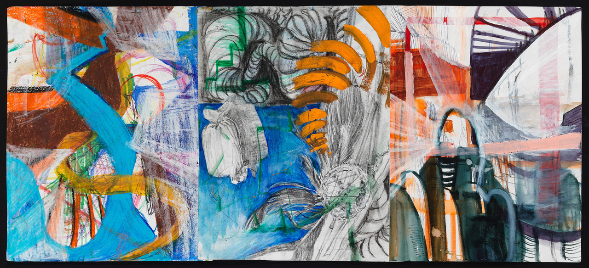
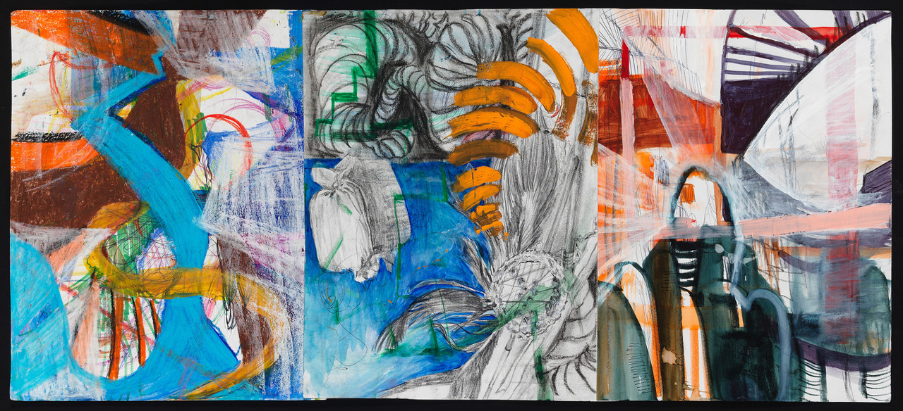

These are mainly from my high school and freshman & sophomore years in college.
This page only includes the art works made with hand, meaning they are not digitally created.
I used to be a fine arts practitioner who enjoyed working with hands-on skills and tools before I changed my career to more digital-oriented mediums.
The knowledge I gained from working with the most fundamental concepts of art hugely impacted the way I constructed my designs until now.
The composition, colors, abstract impressions, nuances, and its conceptual connection to the aesthetic helped me building the most critical skillset as a designer.
The common materials used are; painting is acrylic, drawing with charcoals, and multi-media works made with scrap foam boards and cardboards on canvas mainly.
I enjoyed utilizing different sourced materials into my works —
not that I enjoyed the added dimensionality resulting from the technique, it helped me to understand what constitutes a harmonious visual representation using various different textures, colors, and materials.
These joinings of different domains and techniques really helped me to scope my ability to create attractive, efficient visual language.
To me, I still carry a passion to be a fine-arts practitioner in my later days of life.
Click on the images to see details.
 X
X


 
